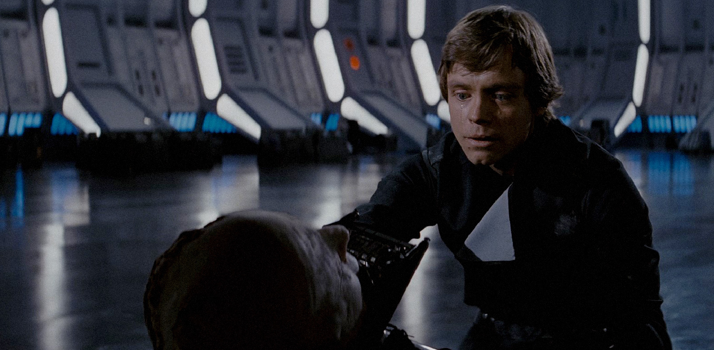

Anakin Skywalker
Time of death: 4 ABY (After the Battle of Yavin)-
Place of death: The Death Star II
Anakin Skywalker was discovered by Jedi Master Qui-Gon Jinn during the Invasion of Naboo in 32 BBY. His connection to the force was strong and the amount of midi-chlorians in his blood surpassed all other Jedi in the galaxy leading Qui-Gon to believe that Anakin was the prophesied “Chosen One” of the Jedi Order, the one destined to bring balance to the force. After Qui-Gon’s death, his Padawan, Obi-Wan Kenobi, kept his promise to take the boy on as an apprentice and teach him the ways of the Jedi. Anakin always found ways to rebel against the Order however, like starting up a secret relationship with Senator Padmé Amidala and marrying her even though the Jedi forbade such attachments. He also served as a Jedi General in the Grand Army of the Republic during the Clone Wars.
Ever since he was brought to the Jedi Temple as a young boy, Senator Palpatine kept a watchful eye on Anakin. They eventually struck up a close alliance and friendship. Unbeknownst to him and the rest of the Jedi however, Palpatine was also the Dark Lord of the Sith known as Darth Sidious and he had been planting seeds of discontent in Anakin this whole time. He finally gave in to Palpatine and turned to the dark side when he started having visions of his wife’s impending doom during childbirth and Palpatine assured him that the only way to save her was with Sith power.
Darth Sidious then dubbed the new Sith Lord as Darth Vader before commanding him to go off and kill the remaining Jedi. Vader was eventually caught up in a battle with his former Master Obi-Wan where he sustained severe injuries and amputations and was left to die. Sidious found him however and rebuilt him as the infamous armored cyborg.
Emperor Palpatine and Darth Vader ruled the galaxy together for decades until the events that took place in 0 BBY with Obi-Wan and Luke Skywalker. Vader begged Luke to take his hand and rule alongside him as father and son but Luke refused. Vader and Luke eventually met again during the Battle of Endor in 4 ABY (Episode VI) where Vader was defeated by his son. However, Luke again refused to strike down his father in anger which led to the Emperor torturing Luke with his Force lightning power. Watching his son being tortured awoke the humanity still left in Vader, resulting in him sacrificing himself for his son and killing Darth Sidious, thus destroying the Sith and fulfilling his destiny as the Chosen One. As he laid on the ground dying, he made peace with Luke before becoming one with the Force.
